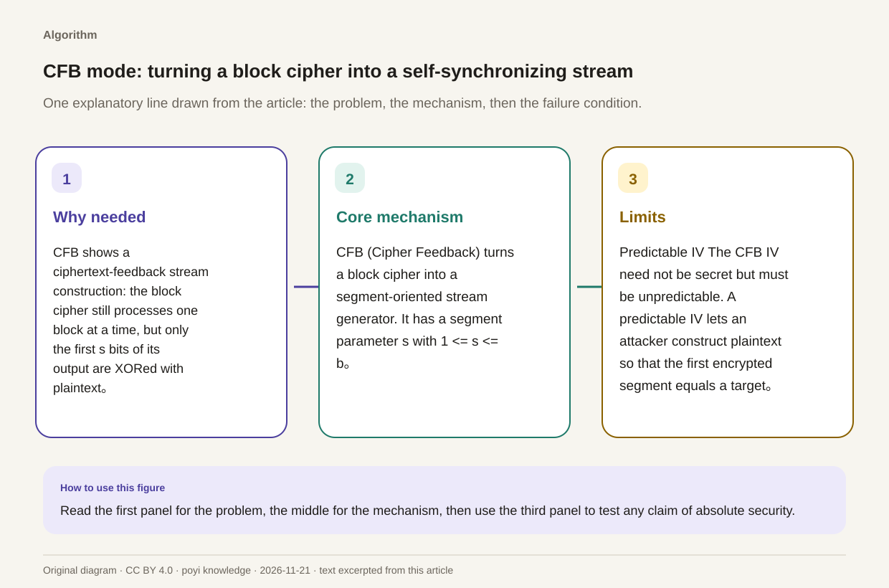
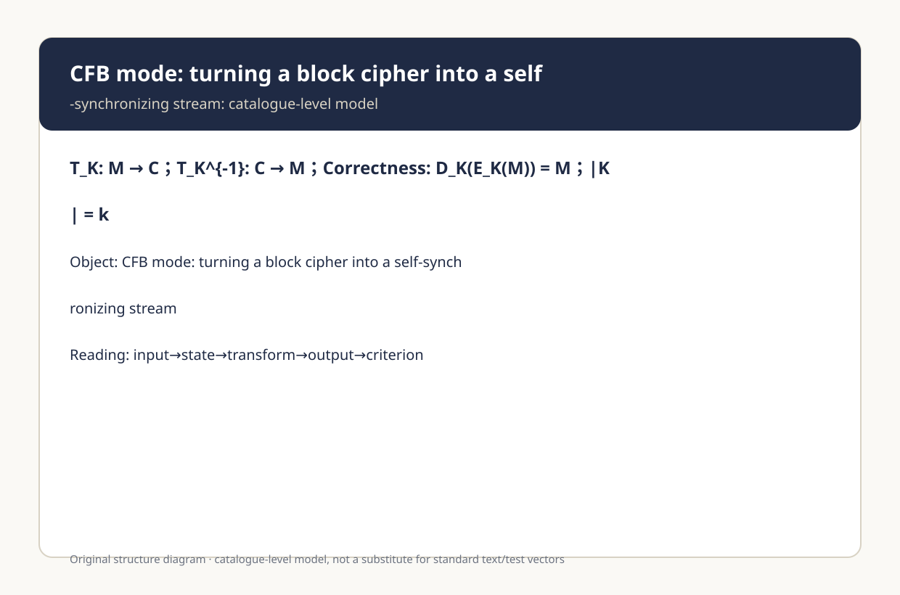

Principles
Algorithm: Cipher Feedback (CFB 密文反馈模式). CFB (Cipher Feedback) turns a block cipher into a segment-oriented stream generator. It has a segment parameter s with 1 <= s <= b, where b is the block size. Plaintext and ciphertext are processed in s-bit segments. Encryption is:
I_1 = IV
I_j = LSB_(b-s)(I_(j-1)) || C_(j-1) (j >= 2)
O_j = E_K(I_j)
C_j = P_j xor MSB_s(O_j)
I_j is the j-th input block, O_j is the block-cipher output and C_j is the j-th ciphertext segment. CFB uses only the forward E_K and needs no D_K. Decryption builds the same input blocks:
P_j = C_j xor MSB_s(O_j)
The first input block is the IV. Each later input block is formed by shifting the previous input block left by s bits and placing the previous ciphertext segment in the lowest s bits. Encryption must therefore be serial because the next input block depends on the previous ciphertext segment; after the input blocks are constructed, decryption can compute E_K in parallel. The CFB IV need not be secret but must be unpredictable. This is the same requirement as CBC, not the uniqueness-only requirement of CTR/OFB. A predictable IV lets an attacker test whether two messages share an initial segment or mount a chosen-plaintext distinction. CFB works in s-bit segments, and ciphertext segments have the same length as plaintext segments. With s=8, any byte string can be processed without padding to the block size; with s equal to the block size, the input length must be a multiple of the block size unless the protocol defines a final-segment rule. CFB does not change the underlying block size or key length.

Why it matters
CFB shows a ciphertext-feedback stream construction: the block cipher still processes one block at a time, but only the first s bits of its output are XORed with plaintext, and the ciphertext is fed back into the next input block. With s=8 it processes byte streams directly; with s=b it resembles CBC chaining but has a different decryption structure.
With s=8, CFB needs no block padding and only the forward cipher direction. Its costs are an unpredictable IV, serial encryption and error propagation along the feedback chain.
Understanding CFB also separates a stream-like appearance from a stateless design: CFB looks like a stream cipher, but its keystream depends on the previous ciphertext segment, so it is not the independently addressable keystream of CTR.
Applications
CFB is a general confidentiality mode for segment-oriented processing where block padding is unwanted. SP 800-38A addresses protection of sensitive information by federal agencies and non-government organizations, and CFB is one of its defined modes.
With s=8, CFB processes data byte by byte, suitable for byte or character streams; with s=b, it feeds back complete blocks, suitable for block-structured data. The choice of s must be explicit in the protocol because it determines segment boundaries, error propagation and interoperability.
CFB provides no integrity. When authentication is needed, use AEAD or add a MAC; the ciphertext looking stream-like does not make it tamper-resistant.

Limits & attacks
The CFB IV need not be secret but must be unpredictable. A predictable IV lets an attacker construct plaintext so that the first encrypted segment equals a target, testing that target's first segment. This chosen-plaintext distinction targets IV generation, not AES itself.
Reusing an IV under the same key repeats the first segment's keystream and leaks the XOR of the two messages' first segments; later segments usually differ because they feed back different ciphertext, but the first-segment leak already breaks confidentiality.
Flipping one bit in a CFB ciphertext segment flips the same bit in the corresponding plaintext segment; the changed segment also enters the next input block, changing later output blocks. With s=b, the error usually affects the current and next block and then resynchronizes; with s<b, it spans more segments.
CFB provides confidentiality only, not integrity. An attacker can modify ciphertext segments and affect plaintext, and CFB cannot detect it; when integrity is needed, use AEAD or a MAC.
s is an explicit CFB parameter. Sender and receiver must use the same s, or segment boundaries and feedback differ and the ciphertext cannot be decrypted correctly. Treating CFB as a single mode without a parameter is a common protocol design error.
This article's teaching implementation demonstrates only AES-128-CFB128 and CFB8 official vectors, bit flipping and IV reuse on fixed data. It does not implement secure IV generation, constant-time processing, key management, protocol state machines or side-channel defenses, and it must not be used in production.
History
In 1980, FIPS 81 defined CFB for DES, letting a block cipher process data in segments shorter than a block. In 2001, SP 800-38A generalized CFB to block ciphers and supplied test vectors for different s values.
CFB's long use shows that looking stream-like does not mean being stateless. CFB obtains self-synchronizing behavior by feeding ciphertext back, but that also makes the IV and error propagation protocol boundaries. CTR and AEAD later addressed the tension between stream processing and integrity in different ways.
This history shows that CFB is a basic mode with a clear boundary: choose s correctly, generate the IV correctly and accept error propagation, and it can provide confidentiality; omit those preconditions and the mode's properties become an attack surface.
Worked example & verification
Worked example
Take one published or standard test vector, record the input, the ordered steps and the byte-exact output, then compare with an independent implementation. Where no citable numeric vector is available, the entry records only structural steps and does not invent an output.
References
- Wikipedia search entry for CFB 密文反馈模式. https://zh.wikipedia.org/w/index.php?search=CFB%20%E5%AF%86%E6%96%87%E5%8F%8D%E9%A6%88%E6%A8%A1%E5%BC%8F
- Handbook of Applied Cryptography (Menezes, van Oorschot, Vanstone). https://www.cacr.math.uwaterloo.ca/hac/